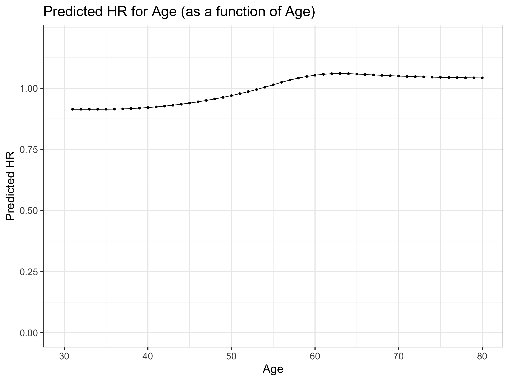
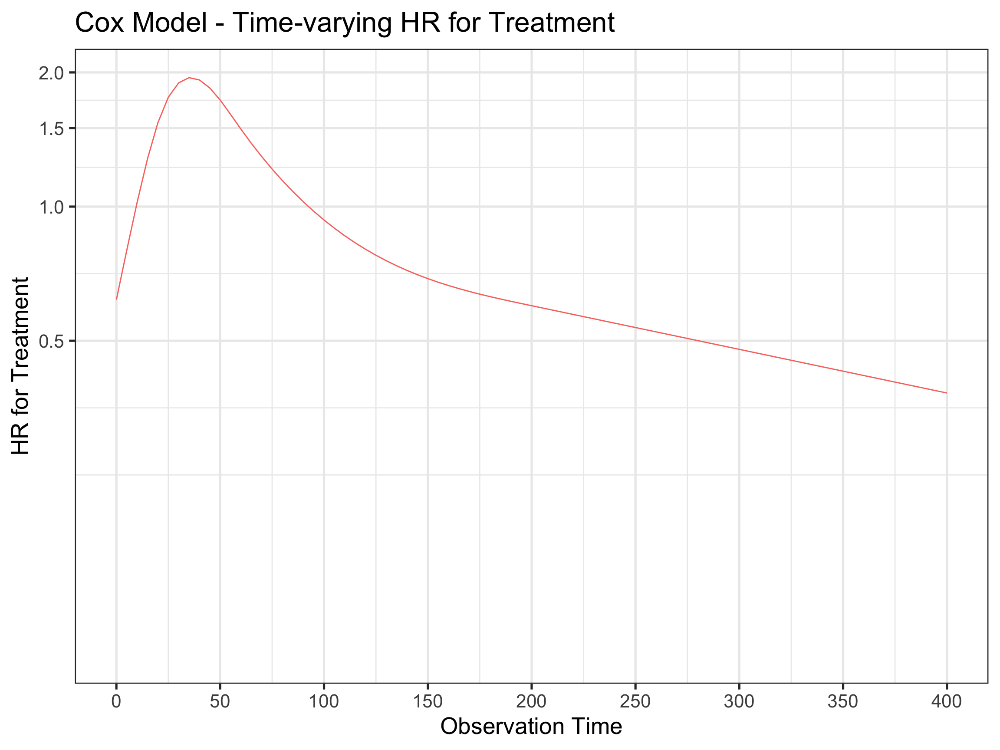
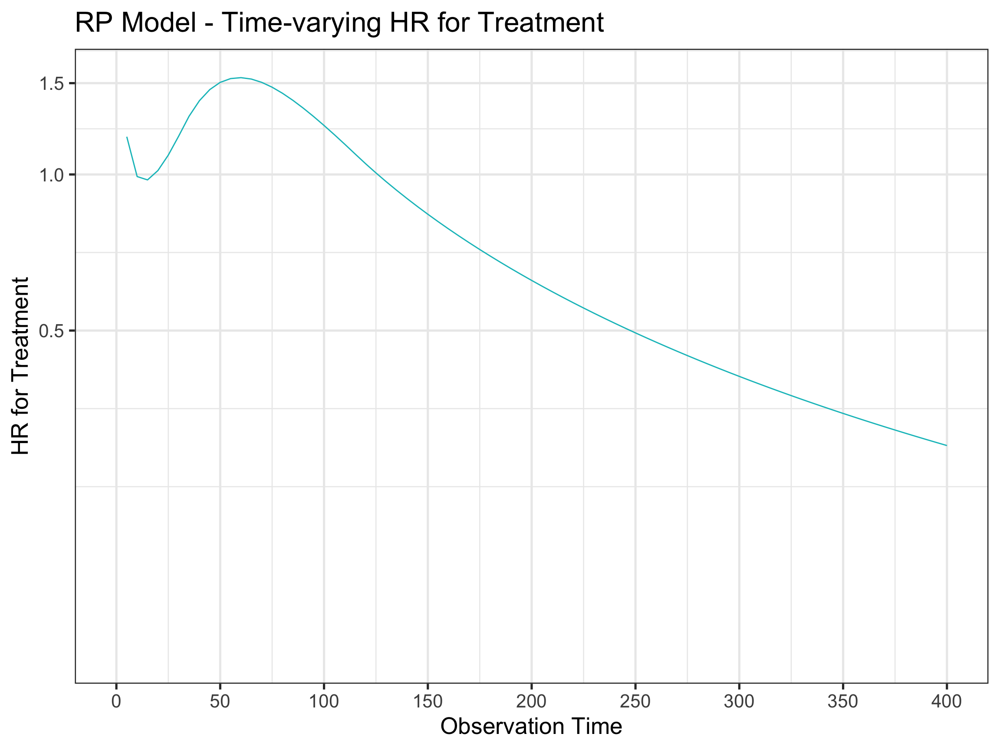
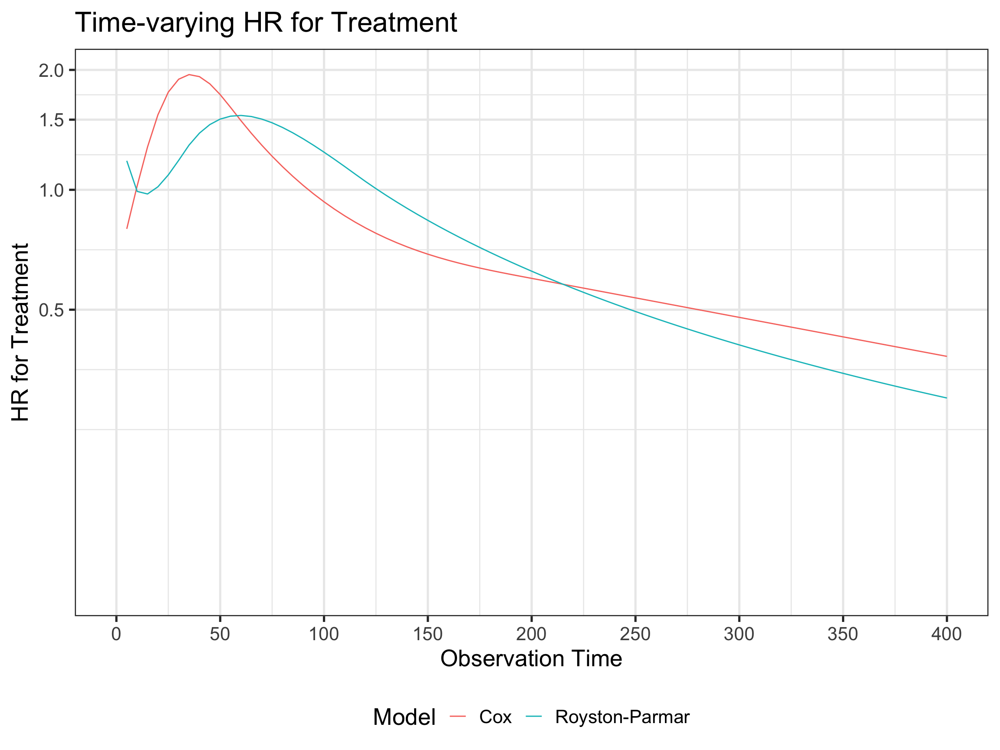

Welcome back to Stats Tips after a brief mid-year break.
In the last post we discussed some approaches to the diagnosis of non-proportional hazards for a covariate in our Cox model.
And the big question I’m sure you’re chomping at the bit to ask is “Well, what can we do about it?”
Ok, relax… there are in fact several things we can do. Today we are going to consider the remediation actions we can take when we are faced with this issue in our day-to-day work. To get us started and to introduce the concepts to you, I’ve broken those actions down broadly into four groups:
Model specification adjustments.
Use strata (categorical variables only).
Incorporate non-proportionality into the model (time-dependent coefficients).
Step functions (different HR’s over different time intervals).
Continuous time-dependent coefficients (smoothed HR over time).
In providing examples of how we might implement each of these in R we will return to the veteran dataset that we used in the last post, so get that ready using the code below.
Code
library(survival)library(tidyverse)library(survminer)library(gtsummary)library(kableExtra)# Load veteran data from survival packagevdata1 <- veteran# Make treatment variable equal to 0,1 instead of 1,2 (not necessary, but I just like to work with the former)vdata1$trt <-as.numeric(vdata1$trt) -1# Create id variable and organise columnsvdata1$id <-seq(1:dim(vdata1)[1])vdata1 <- vdata1 |>select(id, time, status, trt, age)
Let’s talk about these ideas in more detail now.
1 Adjust Your Model Specification
This is something you can explore in your model before you take any of the subsequent actions that I describe. In fact, this is not really doing anything special at all in the treatment of non-proportional hazards. All you are doing here is attempting to optimise your model specification, and that’s an ideal that we should aim to achieve in every model we make.
It may not be immediately intuitive, but tests for proportional hazards (PH) come after the model coefficients for the covariates have been estimated. If there is an error in the model for how the covariates are specified that can also lead to a failure of a PH test - in other words, the power of the test to detect non-proportionality is contingent on the correct specification of the model.
So what do I mean with all this talk of ‘model specification’? Well, in the current context there are three things you can consider doing to optimise your model and facilitate PH testing success:
Check the functional form of your continuous covariates.
Check you haven’t omitted any necessary interactions.
Check you haven’t omitted any important variables.
The first point is simply stating that when you enter a continuous covariate in a model, the model assumes the relationship of that covariate with the outcome of interest (i.e. its functional form) is linear in nature. This can often be an unrealistic assumption, but it is one that is easily checked and fixed by allowing for potential non-linearity with the inclusion of a restricted cubic spline term on your covariate (see here).
The second point is also not difficult to assess in your model. Consider whether there are any potential moderating effects of covariates on the association between any other covariate and the outcome. Test this with the inclusion of an interaction term.
Unfortunately, the third point is more difficult to do anything about as with observational data we typically don’t know what we don’t know. And if we do know another variable would be of value to incorporate in our model, we simply may not have any information on it. So you will be a bit more hamstrung here.
If you recall from the last post, the model fit exploring the association between trt and age and the risk of death, and the resulting GOF PH test from that model was:
vfit1 <- coxph(Surv(time, status) ~ trt + age, vdata1)
Code
# Fit basic model with treatment and age as the only predictorsvfit1 <-coxph(Surv(time, status) ~ trt + age, vdata1)tbl_regression(vfit1, exp = T)
Characteristic
HR1
95% CI1
p-value
trt
1.00
0.70, 1.42
>0.9
age
1.01
0.99, 1.03
0.4
1 HR = Hazard Ratio, CI = Confidence Interval
Code
# Test Schoenfeld residuals(sch_res <-cox.zph(vfit1))
chisq df p
trt 3.67 1 0.055
age 1.68 1 0.195
GLOBAL 6.20 2 0.045
Now, what happens if we include a spline term on age?
vfit2 <- coxph(Surv(time, status) ~ trt + splines::ns(age,3), vdata1)
Code
# Refit model with spline on agevfit2 <-coxph(Surv(time, status) ~ trt + splines::ns(age,3), vdata1)tbl_regression(vfit2, exp = T)
Characteristic
HR1
95% CI1
p-value
trt
1.09
0.76, 1.57
0.6
splines::ns(age, 3)
splines::ns(age, 3)1
1.04
0.54, 2.02
>0.9
splines::ns(age, 3)2
0.23
0.03, 1.65
0.14
splines::ns(age, 3)3
2.50
0.73, 8.58
0.14
1 HR = Hazard Ratio, CI = Confidence Interval
Code
# Test Schoenfeld residuals(sch_res <-cox.zph(vfit2))
chisq df p
trt 2.56 1 0.11
splines::ns(age, 3) 4.55 3 0.21
GLOBAL 6.60 4 0.16
Well there you go - we have already made things better! Unfortunately there is no free lunch and now that you have improved the test of PH by a functional form correction, you need to contend with the complexities involved with the interpretation of spline terms. As I outlined in my previous post on the use of splines, the coefficients are not directly interpretable and so the best option is always to plot your results. We can do that here for the HR for age with a little bit of help from the emmeans and data.table packages:
Code
library(emmeans)# Estimate hazard rate at yearly intervalsemm_df <-emmeans(vfit2, ~ age, at =list(age =seq(30, 80, by =1)), type ="unlink")emm_df <-data.frame(emm_df)# Calculate HR at yearly intervals by dividing each successive pair of hazard rateslibrary(data.table)setDT(emm_df)[, pred_HR :=c(NA, response[-1] / response[-.N])]# Plot HR for age over range of ageggplot(emm_df, aes(x = age, y = pred_HR, group =1)) +geom_line() +geom_point() +scale_y_continuous(limits =c(0, 1.2), breaks =seq(0, 1.2, by =0.25)) +xlab("Age") +ylab("Predicted HR") +ggtitle("Predicted HR for Age (as a function of Age)") +theme_bw(base_size =20)

2 Use Strata
The next simplest approach to dealing with a PH violation is to stratify on the offending covariate in your model. This provides additional flexibility in allowing for proportional hazards within each stratum (i.e. level) of the covariate, but for that definitional reason, really only works with categorical variables. In this stratified Cox model, the regression coefficients are assumed to be the same in each stratum, but the baseline hazard functions may be completely different. And that is how the problem of non-proportionality is circumvented in using this method.
Within the coxph() model call it’s a simple case of specifying a strata() term. Let’s do that now for trt:
vfit3 <- coxph(Surv(time, status) ~ trt + age + strata(trt), vdata1)
Code
vfit3 <-coxph(Surv(time, status) ~ trt + age +strata(trt), vdata1)tbl_regression(vfit3, exp = T)
Characteristic
HR1
95% CI1
p-value
trt
age
1.01
0.99, 1.03
0.4
1 HR = Hazard Ratio, CI = Confidence Interval
Hang on - what happened to the coefficient/HR for trt?? Well, this is the BIG downside to this approach. By stratifying on a covariate, you no longer get any information returned about that covariate. So this method is really only fine if your offending variable isn’t a primary exposure of interest and you are just adjusting for it in the model. Otherwise you are somewhat shooting yourself in the foot if you actually want to know what that effect estimate is.
3 Incorporate Non-Proportionality into the Model
In this approach we use time-varying (-dependent) coefficients. In other words we allow the HR to vary over time for the offending covariate, thus negating any need for the assumption of PH in the first place. There are two variants on these methodological theme - in the first instance we can define time periods where the HR looks relatively stable within each period but different across periods, and estimate different HR’s accordingly. These are called step functions. Alternatively, we can estimate a more continuous (smoothed) HR for the offending covariate over time. This provides more flexibility but at the cost of more complexity.
3.1 Step functions
To help decide how we might define time periods for our trt variable to estimate different HR’s within, it is helpful to inspect the output of our cox.zph() plot, so let’s revisit that now.
The decision is ultimately arbitrary but I would probably divide this into two periods splitting time at about 100 days. My thinking on this is that the HR is larger within that first 100 days and then gradually declines thereafter. While it also appears non-monotonic (increasing and decreasing) in that early period, we can still aim to obtain an averaged effect over that time and then contrast that to the later period (this bit is not an exact science).
To estimate this model we return to our trusty survSplit() function to split time for each individual at the desired points (here 100 days) and then create an interaction term between the offending covariate and the time strata. We do this like so:
vfit4 <- coxph(Surv(tstart, time, status) ~ age + trt:strata(tgroup), data = vdata2)
Code
# Create new df in CP form with splits at 100 daysvdata2 <-survSplit(Surv(time, status) ~., vdata1, cut =100, episode ="tgroup")# Cox model with stepped time-dependent coefficientsvfit4 <-coxph(Surv(tstart, time, status) ~ age + trt:strata(tgroup), data = vdata2)tbl_regression(vfit4, exp = T)
Characteristic
HR1
95% CI1
p-value
age
1.01
0.99, 1.03
0.4
trt * strata(tgroup)
trt * tgroup=1
1.46
0.93, 2.29
0.10
trt * tgroup=2
0.49
0.26, 0.92
0.025
1 HR = Hazard Ratio, CI = Confidence Interval
So, in parameterising the model this way we estimate an average HR for the ‘effect’ of trt to be ~ 1.46 within the first 100 day period and and an average HR of ~ 0.49 thereafter. That fits in fairly nicely with what we see in the above plot.
The related test of PH gives:
Code
cox.zph(vfit4)
chisq df p
age 2.67 1 0.10
trt:strata(tgroup) 1.40 2 0.50
GLOBAL 3.94 3 0.27
Section 4.1 of the time-dependent vignette provides another example of the use of step functions and would be worth some of your time to read.
3.2 Continuous time-dependent coefficients
In evolving the step function approach we can think of chopping up time into smaller and smaller periods, to the point where we essentially end up estimating a continuous HR function over time. Of course, we don’t do this by manually splitting our data - that would be an impossible task. Luckily the coxph() function has the time-transform argument built into it, which I touched on briefly in the last post (more information can be found in Section 4.2 of the above vignette). This is our secret weapon in specifying time-dependent coefficients in the Cox model.
There are as many time transforms (functions of time) to select from as there are that you can think of - the choice is essentially endless. The general formulation of the time transform argument - tt() within a coxph() call (and using our model as an example) can be coded as:
coxph(Surv(time, status) ~ trt + age + tt(trt), tt = function(x,t,...) x * t, vdata1)
This represents a covariate-time interaction where we assume that the association between the covariate and the risk of the event is moderated as a linear function of time. As mentioned there are many other functions you could select, which you could then test in comparison to other functions and select the more appropriate model accordingly. Alternatively, you could just save yourself the effort and specify the most flexible time transform possible - one that involves fitting a restricted cubic spline to the interaction term. To do this we can use the nsk() function within the tt() argument and a general formulation of this model can be coded as:
coxph(Surv(time, status) ~ trt + age + tt(trt), tt = function(x, t, ...) x * nsk(t, df = 3), vdata1)
If we choose this option we are once again faced with the dilemma of interpreting model coefficients in the presence of spline terms. Let’s fit this model and look at the output:
vfit5 <- coxph(Surv(time, status) ~ trt + age + tt(trt), tt = function(x, t, ...) x * nsk(t, df = 3), vdata1)
Code
# Cox model with continuous time-dependent coefficientvfit5 <-coxph(Surv(time, status) ~ trt + age +tt(trt), tt =function(x, t, ...) x *nsk(t, df =3), vdata1)tbl_regression(vfit5, exp = T)
Characteristic
HR1
95% CI1
p-value
trt
0.72
0.24, 2.14
0.6
age
1.01
0.99, 1.03
0.4
tt(trt)1
2.27
0.72, 7.22
0.2
tt(trt)2
2.10
0.54, 8.23
0.3
tt(trt)3
0.83
0.26, 2.68
0.8
1 HR = Hazard Ratio, CI = Confidence Interval
Yep, we can’t easily interpret those coefficients for trt, and how the commensurate HR varies over time. Coefficients produced by models using simpler functions of time may be more amenable to direct interpretation but this is the trade-off when we choose splines to allow maximal flexibility in functional form estimation. As usual, however, we can plot these model results to assist us in visualising how the HR varies in a time-dependent manner. Unfortunately (yes, I know - there always seems to be a catch), we have to use the equivalent “first-principles” specification of the model that I introduced you to in the last post, to facilitate this. We can’t easily plot the results of a model containing a time-transform function. Instead, we first split our data at every event and then estimate the model using the same spline formulation as above. Let’s see what the equivalent model estimated from the counting process formulation of the equivalent single-row/person dataset, gives us:
vfit6 <- coxph(Surv(tstart, time, status) ~ trt + age + trt:nsk(time, df = 3), vdata3)
Code
# Vector of unique event timesevent_times <-sort(unique(with(vdata1, time[status ==1])))# Create new df in CP form with splits at every event timevdata3 <-survSplit(Surv(time, status) ~., vdata1, cut = event_times)# Fit Cox model with splined trt:time interaction (current times)vfit6 <-coxph(Surv(tstart, time, status) ~ trt + age + trt:nsk(time, df =3), vdata3)tbl_regression(vfit6, exp = T)
Characteristic
HR1
95% CI1
p-value
trt
0.72
0.24, 2.14
0.6
age
1.01
0.99, 1.03
0.4
trt * nsk(time, df = 3)
trt * NA
2.27
0.72, 7.22
0.2
trt * NA
2.10
0.54, 8.23
0.3
trt * NA
0.83
0.26, 2.68
0.8
1 HR = Hazard Ratio, CI = Confidence Interval
We see that the model output is identical comparing both vfit5 and vfit6. This is entirely expected seeing the time-transform function splits each person’s single-row data at all event times in the background as part of the estimation process in vfit5 (we just don’t see it). But that is exactly what we have replicated when we apply trt:nsk(time, df = 3) to vfit6 in the manually split dataset.
One final thing to note is that we can’t use cox.zph() on models with tt() terms, and that is a design choice by the package author.
PH test on vfit5 gives:
Code
# cox.zph(vfit5)print("Error in cox.zph(vfit5) : function not defined for models with tt() terms")
[1] "Error in cox.zph(vfit5) : function not defined for models with tt() terms"
And on vfit6:
Code
cox.zph(vfit6)
chisq df p
trt 1.92 1 0.17
age 2.47 1 0.12
trt:nsk(time, df = 3) 4.50 3 0.21
GLOBAL 9.53 5 0.09
3.2.1 Plot time-varying HR
Now let’s get back to plotting the HR for trt as a function of time. The code to do this is shown below, but to explain in words:
We start by creating a new dataframe based on a grid of observation times spanning 1000 days, a fixed value of 1 for trt, and a ‘placeholder’ value of 0 for age (we set this to 0 because the reference is 0 for all covariates in the model and we only want to predict the HR for a one-unit increase in trt - not for any additional ‘effect’ of age).
We then pass that new data to the predict() function asking to predict type = "risk" for trt at the specified value of 1, at each new observation time - this effectively estimates the HR at each new observation time.
We then plot those predictions.
Note
You may be wondering why I am plotting the HR on a log scale. The reason is that coefficients from the Cox model are estimated on the log-hazard scale, a linear scale in which the estimates have (asymptotically) normal distributions. Plotting HR’s on the same additive scale can result in misleading visual impressions of the magnitude of effect variation. Thus, it is in general better practice to display exponentiated effect estimates such as the HR on their native multiplicative scale and this can be achieved with a log-transform of the scale axis.
Code
# Create newdat dftdata <-expand.grid(trt =1, age =0, time =seq(0, 1000, by =5))# Predict HR yhat <-predict(vfit6, newdata = tdata, se.fit =TRUE, type ="risk", reference ="zero")tdata$fit <- yhat$fit# Plotggplot(tdata, aes(x = time, y = fit)) +geom_line(col ='#F8766D') +scale_x_continuous(breaks =seq(0, 400, by =50), limits =c(0, 400)) +scale_y_continuous(trans ="log", breaks =c(0, 0.5, 1, 1.5, 2)) +xlab("Observation Time") +ylab("HR for Treatment") +ggtitle("Cox Model - Time-varying HR for Treatment") +theme_bw(base_size =20)

In the above plot I have decided to truncate observation time at 400 days, to make the x-axis appear less compressed (and given nothing much interesting happens after that). The plot suggests that the HR for trt initially increases, reaches a maximum at about 40 days and then gradually declines. We can replot the Schoenfeld residuals and associated smoothing function (below) as a means to contrast the functional forms for this time-varying effect. It is a little difficult to directly compare them due to some differences in the axis scaling, but we obtain the general impression that both plots display a similar time-varying form for the HR of trt. This gives us confidence that the time-varying HR we have estimated is not an unreasonable result.
We can take this further and actually calculate HR’s (and their 95% C.I.’s) at desired times of interest. Say we want to know the HR for trt at 5, 40, 100 and 400 days. We basically follow the same steps as above in terms of predicting, but instead of type = "risk" we specify type = "lp" which calculates the “linear predictor” or the log hazard ratio. We do this so we can add/subtract1.96 times the standard error, then exponentiating the results to obtain the upper and lower 95% confidence limits. The code is shown below:
Code
# Create newdat df with times of interest to predict attdata2 <-expand.grid(trt =1, age =0, time =c(5, 40, 100, 400))# Predict HR and plotyhat <-predict(vfit6, newdata = tdata2, se.fit =TRUE, type ="lp", reference ="zero")# Calculate HR's and 95% CI'sestimates <-data.frame(Time =c(5, 40, 100, 400),HR =exp(yhat$fit), `Lower CI`=exp(yhat$fit - (1.96*yhat$se.fit)),`Upper CI`=exp(yhat$fit + (1.96*yhat$se.fit)))estimates |>kable(align ="c", digits =2)
Time
HR
Lower.CI
Upper.CI
5
0.80
0.30
2.10
40
1.92
0.95
3.88
100
0.93
0.52
1.67
400
0.38
0.12
1.19
4 Use a Different Type of Model
The final broad approach to dealing with the problem of non-proportional hazards is to forego the Cox model entirely and use a different type of model. The two options I will discuss here fall into the category of parametric survival models - these differ from the Cox model in that the baseline hazard is fully specified according to a known statistical distribution, rather than being estimated empirically as in the case of the semi-parametric Cox.
4.1 Accelerated failure time model
Accelerated failure time (AFT) models provide an alternative parameterisation to their PH counterparts. Whereas a PH model assumes that the ‘effect’ of a covariate is to multiply the hazard by some constant, an AFT model assumes that the ‘effect’ of a covariate is to multiply the time to the event by some constant - in other words, accelerate or decelerate survival time. Rather than a HR, one calculates a Time Ratio (TR), with a TR > 1 indicating that the covariate accelerates survival time (longer survival) and a TR < 1 indicating that the covariate decelerates survival time (shorter survival).
Fitting an AFT survival model can be achieved in R using the survreg() function in the survival package. The standard distributions one can select to model survival times include the weibull, exponential (a special case of the weibull distribution), gaussian, logistic, lognormal, and loglogistic. It is important to note that the weibull and exponential distributions have both a PH and an AFT interpretation, so it is therefore NOT theoretically sound to select one of these distributions - even in the AFT parameterisation - as an alternative to the Cox model when you already know that the PH assumption has been violated. When we want to consider an AFT model as an alternative for failed PH, we should select a distribution that has exclusively AFT properties, and the lognormal seems to be a reasonable place to start.
To be honest I have never had need to fit one of these models and so I have little experience in their application - I’m not providing a worked example for that reason. But that doesn’t mean you shouldn’t consider them if the need should arise. There are many advantages that parametric survival models have over the Cox model and some of these are outlined in my previous post. A notable disadvantage, however, is the need to actually select a survival distribution and this requires some idea of what you think the baseline hazard should look like - something that isn’t always easy to know. Therefore, when I decide to move beyond the Cox model, I tend to go straight to Royston-Parmar models, which I believe incorporate the best of both semi-parametric and parametric survival models. Let’s take a look at them now.
4.2 Flexible parametric (Royston-Parmar) survival model
I suspect flexible parametric survival (also known as Royston-Parmar [RP]) models are both underutilised and underrated in the statistical and research communities. But I think they are great and I am trying to incorporate them more into any survival work that I do. Unfortunately there are not a lot of online resources out there on RP models but here, here, here and here are good places to start.
The basis of the RP model is the use of a restricted cubic spline to model the log cumulative baseline hazard function. This provides as much flexibility as the Cox model in the estimation of the baseline hazard while still being fully specified (and not being constrained to a specific distribution as in the standard parametric modelling approach). The immediate benefits are clear - we don’t need to worry about choosing a particular distribution for our survival times (advantage of the Cox model), yet we can easily predict any survival quantity we want (advantage of the parametric model), explicitly because the model returns the shape of the (unassumed) baseline hazard function. It has been said that “…if all you are interested in is the HR, than the Cox model is for you” (I just can’t remember where). Parametric models can do this and more, making the estimation of not only the HR but additional survival quantities such as survival functions, hazard functions, restricted mean survival times, etc, relatively straightforward. Now, having said all of that I’m not meaning to imply that we should never use the Cox model, but sometimes it’s just helpful to know that there are other options available available to use.
I tend to do most of RP modelling work in Stata using the stpm3 function, but the equivalent go to package in R is rstpm2. Some time ago I performed an analysis in both environments and ended up with the same results, so I think you should be fine using the latter if you don’t have access to Stata. Ok, enough talking - let’s actually run an RP model incorporating a time-varying effect for our trt variable.
The specification of the stpm2 model is relatively straightforward, but there are two spline terms that you need to set the degrees of freedom (df) for. The first is the log cumulative baseline hazard function which determines the overall shape of the baseline hazard - essentially the foundation of the model upon which all estimation is based. This is done with the primary df argument. Then if we have a covariate that fails PH testing and want to incorporate a time-varying effect for it, we do that with the tvc argument. In models that incorporate splines in any context, there is always the question of “How wiggly do I make them?” and that is determined by the df. I tend to follow the advice published in this paper by some of the experts in this modelling framework:
“Our usual starting point is to use 5 degrees of freedom for the baseline and 3 degrees of freedom for any time-dependent effects. This is likely to capture most complex shapes. We would then inspect the AIC and BIC for a selection of models with more and less degrees of freedom to see if we had strong evidence of needing a more simple or more complex model.”
Based on this, for our model at hand I have ended up specifying df = 3 on both the baseline and the time-dependent effect for trt:
vfit7 <- stpm2(Surv(time, status) ~ trt + age, data = vdata1, df = 3, tvc = list(trt = 3))
Unfortunately tbl_regression() does not play nicely with rstpm2 so I will just have to show you the raw model output as is (forgive the ugliness):
Code
# RP model with time-varying effect on trtlibrary(rstpm2)vfit7 <-stpm2(Surv(time, status) ~ trt + age, data = vdata1, df =3, tvc =list(trt =3))summary(vfit7)
This is no easier to interpret than other model with spline terms included and as usual it is better if we plot the model results. Prediction following stpm2 is a little different to that for the Cox model but essentially does the same thing. We first specify a new dataframe to predict on and then use the exposed argument to show the difference in the covariate values that we want to estimate an effect for.
Code
# Predict HR# Note that it doesn't matter what we set the age values to in this case as there is no interaction between trt and age (i.e. the HR for trt is the same regardless of age). But we need to specify something otherwise predict will complain.pred_hrs <-predict(vfit7, type ="hr",newdata =data.frame(time =seq(0, 1000, by =5), trt =0, age =20), # age value = placeholderexposed =function(data) transform(data, trt =1, age =20), # age value = placeholderfull =TRUE, se.fit =TRUE)# Now plotggplot(pred_hrs, aes(x = time, y = Estimate)) +geom_line(col ='#00BFC4') +scale_x_continuous(breaks =seq(0, 400, by =50), limits =c(0, 400)) +scale_y_continuous(trans ="log", breaks =c(0, 0.5, 1, 1.5, 2)) +xlab("Observation Time") +ylab("HR for Treatment") +ggtitle("RP Model - Time-varying HR for Treatment") +theme_bw(base_size =20)

This looks quite similar to the plot for the Cox model above. As we did for the Cox model, let’s estimate the HR from the RP model at the same times of interest.
Code
# Calculate HR's and 95% CI'sestimates <-predict(vfit7, type ="hr",newdata =data.frame(time =c(5, 40, 100, 400), trt =0, age =20), # age value = placeholderexposed =function(data) transform(data, trt =1, age =20), # age value = placeholderfull =TRUE, se.fit =TRUE)# Select relevant columns and renameestimates <- estimates |>select(time, Estimate, lower, upper) |>rename(Time = time,HR = Estimate,`Lower CI`= lower,`Upper CI`= upper)estimates |>kable(align ="c", digits =2)
Time
HR
Lower CI
Upper CI
5
1.18
0.49
2.86
40
1.39
0.83
2.33
100
1.24
0.71
2.17
400
0.30
0.13
0.69
For interest and before we wrap this up, let’s superimpose the time-varying HR curves from both the Cox and RP models to enable a more direct comparison.
Code
# Tidy RP pred outputpred_hrs <- pred_hrs |>select(time, Estimate) |>slice(-1) |>mutate(Model ="Royston-Parmar")# Tidy Cox pred outputtdata <- tdata |>select(time, fit) |>slice(-1) |>rename(Estimate = fit) |>mutate(Model ="Cox")# Merge both sets of predictionspreds_rp_cox <-rbind(pred_hrs, tdata) |>arrange(time)# Plotggplot(preds_rp_cox, aes(x = time, y = Estimate, color = Model)) +geom_line() +scale_x_continuous(breaks =seq(0, 400, by =50), limits =c(0, 400)) +scale_y_continuous(trans ="log", breaks =c(0, 0.5, 1, 1.5, 2)) +xlab("Observation Time") +ylab("HR for Treatment") +ggtitle("Time-varying HR for Treatment") +theme_bw(base_size =20) +theme(legend.position="bottom")

Ok, not perfectly congruent, but they both show a similar pattern in that there is an initial increase and then gradual decline in the ‘effect’ of trt over time. Keep in mind that semi- and fully-parametric models are quite different modelling frameworks so the fact that we some concordance in the output gives us more confidence in establishing the validity of our results. I like RP models so much that I will aim to make them the subject of one of these blog posts in the not too distant future.
5 Wrap-Up
Ok - I’m sure you would agree that you need a break. My apologies if you feel like I’ve made you run the mental equivalent of a marathon in these last two posts. As you can now see, there is a lot one can potentially cover following the violation of what might appear to be a very simple assumption. Damn you - proportional hazards! Hopefully this has given you some of both knowledge and coding tools that you can put to use when next faced with this common problem in your survival analysis endeavours.
Source Code
---title: "Are your Hazards Proportional? - What to do when it just ain't so (Part 2)"date: 2025-07-25categories: [code, concept, modelling, visualisation]# image: "images/plot.png"description: "The hazards of misunderstanding the hazard ratio."---Welcome back to Stats Tips after a brief mid-year break.In the last post we discussed some approaches to the diagnosis of non-proportional hazards for a covariate in our Cox model.And the big question I'm sure you're chomping at the bit to ask is "Well, what can we do about it?"Ok, relax... there are in fact several things we can do. Today we are going to consider the remediation actions we can take when we are faced with this issue in our day-to-day work. To get us started and to introduce the concepts to you, I've broken those actions down broadly into four groups:1. Model specification adjustments.2. Use strata (categorical variables only).3. Incorporate non-proportionality into the model (time-dependent coefficients). - Step functions (different HR's over different time intervals). - Continuous time-dependent coefficients (smoothed HR over time).4. Use a different type of model. - Accelerated failure time model. - Flexible parametric (Royston-Parmar) survival model.In providing examples of how we might implement each of these in `R` we will return to the `veteran` dataset that we used in the last post, so get that ready using the code below.```{r}#| message: false#| warning: falselibrary(survival)library(tidyverse)library(survminer)library(gtsummary)library(kableExtra)# Load veteran data from survival packagevdata1 <- veteran# Make treatment variable equal to 0,1 instead of 1,2 (not necessary, but I just like to work with the former)vdata1$trt <-as.numeric(vdata1$trt) -1# Create id variable and organise columnsvdata1$id <-seq(1:dim(vdata1)[1])vdata1 <- vdata1 |>select(id, time, status, trt, age)```Let's talk about these ideas in more detail now.# Adjust Your Model SpecificationThis is something you can explore in your model before you take any of the subsequent actions that I describe. In fact, this is not really doing anything special at all in the treatment of non-proportional hazards. All you are doing here is attempting to optimise your model specification, and that's an ideal that we should aim to achieve in every model we make.It may not be immediately intuitive, but tests for proportional hazards (PH) come after the model coefficients for the covariates have been estimated. If there is an error in the model for how the covariates are specified that can also lead to a failure of a PH test - in other words, the power of the test to detect non-proportionality is contingent on the correct specification of the model.So what do I mean with all this talk of 'model specification'? Well, in the current context there are three things you can consider doing to optimise your model and facilitate PH testing success:1. Check the functional form of your continuous covariates.2. Check you haven't omitted any necessary interactions.3. Check you haven't omitted any important variables.The first point is simply stating that when you enter a continuous covariate in a model, the model assumes the relationship of that covariate with the outcome of interest (i.e. its functional form) is linear in nature. This can often be an unrealistic assumption, but it is one that is easily checked and fixed by allowing for potential non-linearity with the inclusion of a restricted cubic spline term on your covariate ([see here)](https://msni-stats-tips.netlify.app/posts/009_05apr_2024/).The second point is also not difficult to assess in your model. Consider whether there are any potential moderating effects of covariates on the association between any other covariate and the outcome. Test this with the inclusion of an interaction term.Unfortunately, the third point is more difficult to do anything about as with observational data we typically don't know what we don't know. And if we do know another variable would be of value to incorporate in our model, we simply may not have any information on it. So you will be a bit more hamstrung here.If you recall from the last post, the model fit exploring the association between `trt` and `age` and the risk of death, and the resulting GOF PH test from that model was:`vfit1 <- coxph(Surv(time, status) ~ trt + age, vdata1)````{r}# Fit basic model with treatment and age as the only predictorsvfit1 <-coxph(Surv(time, status) ~ trt + age, vdata1)tbl_regression(vfit1, exp = T)# Test Schoenfeld residuals(sch_res <-cox.zph(vfit1))```Now, what happens if we include a spline term on age?`vfit2 <- coxph(Surv(time, status) ~ trt + splines::ns(age,3), vdata1)````{r}# Refit model with spline on agevfit2 <-coxph(Surv(time, status) ~ trt + splines::ns(age,3), vdata1)tbl_regression(vfit2, exp = T)# Test Schoenfeld residuals(sch_res <-cox.zph(vfit2))```Well there you go - we have already made things better! Unfortunately there is no free lunch and now that you have improved the test of PH by a functional form correction, you need to contend with the complexities involved with the interpretation of spline terms. As I outlined in my previous post on the use of splines, the coefficients are not directly interpretable and so the best option is always to plot your results. We can do that here for the HR for age with a little bit of help from the `emmeans` and `data.table` packages:```{r}#| message: false#| warning: falselibrary(emmeans)# Estimate hazard rate at yearly intervalsemm_df <-emmeans(vfit2, ~ age, at =list(age =seq(30, 80, by =1)), type ="unlink")emm_df <-data.frame(emm_df)# Calculate HR at yearly intervals by dividing each successive pair of hazard rateslibrary(data.table)setDT(emm_df)[, pred_HR :=c(NA, response[-1] / response[-.N])]# Plot HR for age over range of ageggplot(emm_df, aes(x = age, y = pred_HR, group =1)) +geom_line() +geom_point() +scale_y_continuous(limits =c(0, 1.2), breaks =seq(0, 1.2, by =0.25)) +xlab("Age") +ylab("Predicted HR") +ggtitle("Predicted HR for Age (as a function of Age)") +theme_bw(base_size =20)```# Use StrataThe next simplest approach to dealing with a PH violation is to stratify on the offending covariate in your model. This provides additional flexibility in allowing for proportional hazards *within* each stratum (i.e. level) of the covariate, but for that definitional reason, really only works with *categorical* variables. In this stratified Cox model, **the regression coefficients are assumed to be the same in each stratum**, but the **baseline hazard functions may be completely different**. And that is how the problem of non-proportionality is circumvented in using this method.Within the `coxph()` model call it's a simple case of specifying a `strata()` term. Let's do that now for `trt`:`vfit3 <- coxph(Surv(time, status) ~ trt + age + strata(trt), vdata1)````{r}vfit3 <-coxph(Surv(time, status) ~ trt + age +strata(trt), vdata1)tbl_regression(vfit3, exp = T)```Hang on - what happened to the coefficient/HR for `trt`?? Well, this is the BIG downside to this approach. By stratifying on a covariate, you no longer get any information returned about that covariate. So this method is really only fine if your offending variable isn't a primary exposure of interest and you are just adjusting for it in the model. Otherwise you are somewhat shooting yourself in the foot if you actually want to know what that effect estimate is.# Incorporate Non-Proportionality into the ModelIn this approach we use time-varying (-dependent) coefficients. In other words we allow the HR to vary over time for the offending covariate, thus negating any need for the assumption of PH in the first place. There are two variants on these methodological theme - in the first instance we can define time periods where the HR looks relatively stable within each period but different across periods, and estimate different HR's accordingly. These are called step functions. Alternatively, we can estimate a more continuous (smoothed) HR for the offending covariate over time. This provides more flexibility but at the cost of more complexity.## Step functionsTo help decide how we might define time periods for our `trt` variable to estimate different HR's within, it is helpful to inspect the output of our `cox.zph()` plot, so let's revisit that now.```{r}sch_res <-cox.zph(vfit1)plot(sch_res[1], hr = T) # trtabline(h =1, lty =3, col ="red")```The decision is ultimately arbitrary but I would probably divide this into two periods splitting time at about `100` days. My thinking on this is that the HR is larger within that first `100` days and then gradually declines thereafter. While it also appears non-monotonic (increasing and decreasing) in that early period, we can still aim to obtain an averaged effect over that time and then contrast that to the later period (this bit is not an exact science).To estimate this model we return to our trusty `survSplit()` function to split time for each individual at the desired points (here `100` days) and then create an interaction term between the offending covariate and the time strata. We do this like so:`vfit4 <- coxph(Surv(tstart, time, status) ~ age + trt:strata(tgroup), data = vdata2)````{r}# Create new df in CP form with splits at 100 daysvdata2 <-survSplit(Surv(time, status) ~., vdata1, cut =100, episode ="tgroup")# Cox model with stepped time-dependent coefficientsvfit4 <-coxph(Surv(tstart, time, status) ~ age + trt:strata(tgroup), data = vdata2)tbl_regression(vfit4, exp = T)```So, in parameterising the model this way we estimate an average HR for the 'effect' of `trt` to be `~ 1.46` within the first `100` day period and and an average HR of `~ 0.49` thereafter. That fits in fairly nicely with what we see in the above plot.The related test of PH gives:```{r}cox.zph(vfit4)```Section 4.1 of the [time-dependent vignette](https://cran.r-project.org/web/packages/survival/vignettes/timedep.pdf) provides another example of the use of step functions and would be worth some of your time to read.## Continuous time-dependent coefficientsIn evolving the step function approach we can think of chopping up time into smaller and smaller periods, to the point where we essentially end up estimating a continuous HR function over time. Of course, we don't do this by manually splitting our data - that would be an impossible task. Luckily the `coxph()` function has the *time-transform* argument built into it, which I touched on briefly in the last post (more information can be found in Section 4.2 of the above vignette). This is our secret weapon in specifying time-dependent coefficients in the Cox model.There are as many time transforms (functions of time) to select from as there are that you can think of - the choice is essentially endless. The general formulation of the time transform argument - `tt()` within a `coxph()` call (and using our model as an example) can be coded as:`coxph(Surv(time, status) ~ trt + age + tt(trt), tt = function(x,t,...) x * t, vdata1)`This represents a covariate-time interaction where we assume that the association between the covariate and the risk of the event is moderated as a linear function of time. As mentioned there are many other functions you could select, which you could then test in comparison to other functions and select the more appropriate model accordingly. Alternatively, you could just save yourself the effort and specify the most flexible time transform possible - one that involves fitting a restricted cubic spline to the interaction term. To do this we can use the `nsk()` function within the `tt()` argument and a general formulation of this model can be coded as:`coxph(Surv(time, status) ~ trt + age + tt(trt), tt = function(x, t, ...) x * nsk(t, df = 3), vdata1)`If we choose this option we are once again faced with the dilemma of interpreting model coefficients in the presence of spline terms. Let's fit this model and look at the output:`vfit5 <- coxph(Surv(time, status) ~ trt + age + tt(trt), tt = function(x, t, ...) x * nsk(t, df = 3), vdata1)````{r}#| message: false#| warning: false# Cox model with continuous time-dependent coefficientvfit5 <-coxph(Surv(time, status) ~ trt + age +tt(trt), tt =function(x, t, ...) x *nsk(t, df =3), vdata1)tbl_regression(vfit5, exp = T)```Yep, we can't easily interpret those coefficients for `trt`, and how the commensurate HR varies over time. Coefficients produced by models using simpler functions of time may be more amenable to direct interpretation but this is the trade-off when we choose splines to allow maximal flexibility in functional form estimation. As usual, however, we can plot these model results to assist us in visualising how the HR varies in a time-dependent manner. Unfortunately (yes, I know - there always seems to be a catch), we have to use the equivalent "first-principles" specification of the model that I introduced you to in the last post, to facilitate this. We can't easily plot the results of a model containing a time-transform function. Instead, we first split our data at every event and then estimate the model using the same spline formulation as above. Let's see what the equivalent model estimated from the counting process formulation of the equivalent single-row/person dataset, gives us:`vfit6 <- coxph(Surv(tstart, time, status) ~ trt + age + trt:nsk(time, df = 3), vdata3)````{r}# Vector of unique event timesevent_times <-sort(unique(with(vdata1, time[status ==1])))# Create new df in CP form with splits at every event timevdata3 <-survSplit(Surv(time, status) ~., vdata1, cut = event_times)# Fit Cox model with splined trt:time interaction (current times)vfit6 <-coxph(Surv(tstart, time, status) ~ trt + age + trt:nsk(time, df =3), vdata3)tbl_regression(vfit6, exp = T)```We see that the model output is identical comparing both `vfit5` and `vfit6`. This is entirely expected seeing the time-transform function splits each person's single-row data at all event times in the background as part of the estimation process in `vfit5` (we just don't see it). But that is exactly what we have replicated when we apply `trt:nsk(time, df = 3)` to `vfit6` in the manually split dataset.One final thing to note is that we can't use `cox.zph()` on models with `tt()` terms, and that is a design choice by the package author.PH test on `vfit5` gives:```{r}# cox.zph(vfit5)print("Error in cox.zph(vfit5) : function not defined for models with tt() terms")```And on `vfit6`:```{r}cox.zph(vfit6)```### Plot time-varying HRNow let's get back to plotting the HR for `trt` as a function of time. The code to do this is shown below, but to explain in words:1. We start by creating a new dataframe based on a grid of observation times spanning `1000` days, a fixed value of `1` for `trt`, and a 'placeholder' value of `0` for `age` (we set this to `0` because the reference is `0` for all covariates in the model and we only want to predict the HR for a one-unit increase in `trt` - not for any additional 'effect' of `age`).2. We then pass that new data to the `predict()` function asking to predict `type = "risk"` for `trt` at the specified value of `1`, at each new observation time - this effectively estimates the HR at each new observation time.3. We then plot those predictions.::: callout-noteYou may be wondering why I am plotting the HR on a log scale. The reason is that coefficients from the Cox model are *estimated on the log-hazard scale*, a linear scale in which the estimates have (asymptotically) normal distributions. Plotting HR's on the same additive scale can result in misleading visual impressions of the magnitude of effect variation. Thus, it is in general better practice to display exponentiated effect estimates such as the HR on their native multiplicative scale and this can be achieved with a log-transform of the scale axis.:::```{r}#| message: false#| warning: false# Create newdat dftdata <-expand.grid(trt =1, age =0, time =seq(0, 1000, by =5))# Predict HR yhat <-predict(vfit6, newdata = tdata, se.fit =TRUE, type ="risk", reference ="zero")tdata$fit <- yhat$fit# Plotggplot(tdata, aes(x = time, y = fit)) +geom_line(col ='#F8766D') +scale_x_continuous(breaks =seq(0, 400, by =50), limits =c(0, 400)) +scale_y_continuous(trans ="log", breaks =c(0, 0.5, 1, 1.5, 2)) +xlab("Observation Time") +ylab("HR for Treatment") +ggtitle("Cox Model - Time-varying HR for Treatment") +theme_bw(base_size =20) ```In the above plot I have decided to truncate observation time at `400` days, to make the x-axis appear less compressed (and given nothing much interesting happens after that). The plot suggests that the HR for `trt` initially increases, reaches a maximum at about `40` days and then gradually declines. We can replot the Schoenfeld residuals and associated smoothing function (below) as a means to contrast the functional forms for this time-varying effect. It is a little difficult to directly compare them due to some differences in the axis scaling, but we obtain the general impression that both plots display a similar time-varying form for the HR of `trt`. This gives us confidence that the time-varying HR we have estimated is not an unreasonable result.```{r}sch_res <-cox.zph(vfit1)plot(sch_res[1], hr = T) # trtabline(h =1, lty =3, col ="red")```### Estimate HR at times of interestWe can take this further and actually calculate HR's (and their 95% C.I.'s) at desired times of interest. Say we want to know the HR for `trt` at `5`, `40`, `100` and `400` days. We basically follow the same steps as above in terms of predicting, but instead of `type = "risk"` we specify `type = "lp"` which calculates the "linear predictor" or the log hazard ratio. We do this so we can *add/subtract* `1.96` times the standard error, then exponentiating the results to obtain the upper and lower 95% confidence limits. The code is shown below:```{r}# Create newdat df with times of interest to predict attdata2 <-expand.grid(trt =1, age =0, time =c(5, 40, 100, 400))# Predict HR and plotyhat <-predict(vfit6, newdata = tdata2, se.fit =TRUE, type ="lp", reference ="zero")# Calculate HR's and 95% CI'sestimates <-data.frame(Time =c(5, 40, 100, 400),HR =exp(yhat$fit), `Lower CI`=exp(yhat$fit - (1.96*yhat$se.fit)),`Upper CI`=exp(yhat$fit + (1.96*yhat$se.fit)))estimates |>kable(align ="c", digits =2)```# Use a Different Type of ModelThe final broad approach to dealing with the problem of non-proportional hazards is to forego the Cox model entirely and use a different type of model. The two options I will discuss here fall into the category of [parametric survival models](https://msni-stats-tips.netlify.app/posts/021_01nov_2024/#parametric-exponential-weibull-log-normal-etc) - these differ from the Cox model in that the baseline hazard is fully specified according to a known statistical distribution, rather than being estimated empirically as in the case of the semi-parametric Cox.## Accelerated failure time modelAccelerated failure time (AFT) models provide an alternative parameterisation to their PH counterparts. Whereas a PH model assumes that the 'effect' of a covariate is to **multiply the hazard** by some constant, an AFT model assumes that the 'effect' of a covariate is to **multiply the time** to the event by some constant - in other words, accelerate or decelerate survival time. Rather than a HR, one calculates a Time Ratio (TR), with a TR \>`1` indicating that the covariate accelerates survival time (longer survival) and a TR \<`1` indicating that the covariate decelerates survival time (shorter survival).Fitting an AFT survival model can be achieved in `R` using the [`survreg()`](https://www.rdocumentation.org/packages/survival/versions/3.8-3/topics/survreg) function in the `survival` package. The standard distributions one can select to model survival times include the weibull, exponential (a special case of the weibull distribution), gaussian, logistic, lognormal, and loglogistic. It is important to note that the weibull and exponential distributions have both a PH and an AFT interpretation, so it is therefore NOT theoretically sound to select one of these distributions - even in the AFT parameterisation - as an alternative to the Cox model when you already know that the PH assumption has been violated. When we want to consider an AFT model as an alternative for failed PH, we should select a distribution that has exclusively AFT properties, and the lognormal seems to be a reasonable place to start.To be honest I have never had need to fit one of these models and so I have little experience in their application - I'm not providing a worked example for that reason. But that doesn't mean you shouldn't consider them if the need should arise. There are many advantages that parametric survival models have over the Cox model and some of these are outlined in my [previous post](https://msni-stats-tips.netlify.app/posts/021_01nov_2024/#parametric-exponential-weibull-log-normal-etc). A notable disadvantage, however, is the need to actually select a survival distribution and this requires some idea of what you think the baseline hazard should look like - something that isn't always easy to know. Therefore, when I decide to move beyond the Cox model, I tend to go straight to Royston-Parmar models, which I believe incorporate the best of both semi-parametric and parametric survival models. Let's take a look at them now.## Flexible parametric (Royston-Parmar) survival modelI suspect flexible parametric survival (also known as Royston-Parmar \[RP\]) models are both underutilised and underrated in the statistical and research communities. But I think they are great and I am trying to incorporate them more into any survival work that I do. Unfortunately there are not a lot of online resources out there on RP models but [here](https://journals.sagepub.com/doi/pdf/10.1177/1536867x0900900206), [here](https://www.tandfonline.com/doi/full/10.1080/03610918.2019.1634201#d1e333), [here](https://pclambert.net/pdf/Stata2024_Germany_Paul_Lambert.pdf) and [here](https://www.pauldickman.com/pdf/talk-milan-mar2023.pdf) are good places to start.The basis of the RP model is the use of a restricted cubic spline to model the log cumulative baseline hazard function. This provides as much flexibility as the Cox model in the estimation of the baseline hazard while still being fully specified (and not being constrained to a specific distribution as in the standard parametric modelling approach). The immediate benefits are clear - we don't need to worry about choosing a particular distribution for our survival times (advantage of the Cox model), yet we can easily predict any survival quantity we want (advantage of the parametric model), explicitly because the model returns the shape of the (unassumed) baseline hazard function. It has been said that "...if all you are interested in is the HR, than the Cox model is for you" (I just can't remember where). Parametric models can do this and more, making the estimation of not only the HR but additional survival quantities such as survival functions, hazard functions, restricted mean survival times, etc, relatively straightforward. Now, having said all of that I'm not meaning to imply that we should never use the Cox model, but sometimes it's just helpful to know that there are other options available available to use.I tend to do most of RP modelling work in `Stata` using the [`stpm3`](https://pclambert.net/software/stpm3.html) function, but the equivalent go to package in `R` is [`rstpm2`](https://cran.r-project.org/web/packages/rstpm2/index.html). Some time ago I performed an analysis in both environments and ended up with the same results, so I think you should be fine using the latter if you don't have access to `Stata`. Ok, enough talking - let's actually run an RP model incorporating a time-varying effect for our `trt` variable.The specification of the `stpm2` model is relatively straightforward, but there are two spline terms that you need to set the degrees of freedom (`df`) for. The first is the log cumulative baseline hazard function which determines the overall shape of the baseline hazard - essentially the foundation of the model upon which all estimation is based. This is done with the primary `df` argument. Then if we have a covariate that fails PH testing and want to incorporate a time-varying effect for it, we do that with the `tvc` argument. In models that incorporate splines in any context, there is always the question of "How wiggly do I make them?" and that is determined by the `df`. I tend to follow the advice published in this [paper](https://www.tandfonline.com/doi/full/10.1080/03610918.2019.1634201#d1e333) by some of the experts in this modelling framework:"Our usual starting point is to use 5 degrees of freedom for the baseline and 3 degrees of freedom for any time-dependent effects. This is likely to capture most complex shapes. We would then inspect the AIC and BIC for a selection of models with more and less degrees of freedom to see if we had strong evidence of needing a more simple or more complex model."Based on this, for our model at hand I have ended up specifying `df = 3` on both the baseline and the time-dependent effect for `trt`:`vfit7 <- stpm2(Surv(time, status) ~ trt + age, data = vdata1, df = 3, tvc = list(trt = 3))`Unfortunately `tbl_regression()` does not play nicely with `rstpm2` so I will just have to show you the raw model output as is (forgive the ugliness):```{r}#| message: false#| warning: false# RP model with time-varying effect on trtlibrary(rstpm2)vfit7 <-stpm2(Surv(time, status) ~ trt + age, data = vdata1, df =3, tvc =list(trt =3))summary(vfit7)```This is no easier to interpret than other model with spline terms included and as usual it is better if we plot the model results. Prediction following `stpm2` is a little different to that for the Cox model but essentially does the same thing. We first specify a new dataframe to predict on and then use the `exposed` argument to show the difference in the covariate values that we want to estimate an effect for.```{r}#| message: false#| warning: false# Predict HR# Note that it doesn't matter what we set the age values to in this case as there is no interaction between trt and age (i.e. the HR for trt is the same regardless of age). But we need to specify something otherwise predict will complain.pred_hrs <-predict(vfit7, type ="hr",newdata =data.frame(time =seq(0, 1000, by =5), trt =0, age =20), # age value = placeholderexposed =function(data) transform(data, trt =1, age =20), # age value = placeholderfull =TRUE, se.fit =TRUE)# Now plotggplot(pred_hrs, aes(x = time, y = Estimate)) +geom_line(col ='#00BFC4') +scale_x_continuous(breaks =seq(0, 400, by =50), limits =c(0, 400)) +scale_y_continuous(trans ="log", breaks =c(0, 0.5, 1, 1.5, 2)) +xlab("Observation Time") +ylab("HR for Treatment") +ggtitle("RP Model - Time-varying HR for Treatment") +theme_bw(base_size =20) ```This looks quite similar to the plot for the Cox model above. As we did for the Cox model, let's estimate the HR from the RP model at the same times of interest.```{r}# Calculate HR's and 95% CI'sestimates <-predict(vfit7, type ="hr",newdata =data.frame(time =c(5, 40, 100, 400), trt =0, age =20), # age value = placeholderexposed =function(data) transform(data, trt =1, age =20), # age value = placeholderfull =TRUE, se.fit =TRUE)# Select relevant columns and renameestimates <- estimates |>select(time, Estimate, lower, upper) |>rename(Time = time,HR = Estimate,`Lower CI`= lower,`Upper CI`= upper)estimates |>kable(align ="c", digits =2)```For interest and before we wrap this up, let's superimpose the time-varying HR curves from both the Cox and RP models to enable a more direct comparison.```{r}#| message: false#| warning: false# Tidy RP pred outputpred_hrs <- pred_hrs |>select(time, Estimate) |>slice(-1) |>mutate(Model ="Royston-Parmar")# Tidy Cox pred outputtdata <- tdata |>select(time, fit) |>slice(-1) |>rename(Estimate = fit) |>mutate(Model ="Cox")# Merge both sets of predictionspreds_rp_cox <-rbind(pred_hrs, tdata) |>arrange(time)# Plotggplot(preds_rp_cox, aes(x = time, y = Estimate, color = Model)) +geom_line() +scale_x_continuous(breaks =seq(0, 400, by =50), limits =c(0, 400)) +scale_y_continuous(trans ="log", breaks =c(0, 0.5, 1, 1.5, 2)) +xlab("Observation Time") +ylab("HR for Treatment") +ggtitle("Time-varying HR for Treatment") +theme_bw(base_size =20) +theme(legend.position="bottom")```Ok, not perfectly congruent, but they both show a similar pattern in that there is an initial increase and then gradual decline in the 'effect' of `trt` over time. Keep in mind that semi- and fully-parametric models are quite different modelling frameworks so the fact that we some concordance in the output gives us more confidence in establishing the validity of our results. I like RP models so much that I will aim to make them the subject of one of these blog posts in the not too distant future.# Wrap-UpOk - I'm sure you would agree that you need a break. My apologies if you feel like I've made you run the mental equivalent of a marathon in these last two posts. As you can now see, there is a lot one can potentially cover following the violation of what might appear to be a very simple assumption. Damn you - proportional hazards! Hopefully this has given you some of both knowledge and coding tools that you can put to use when next faced with this common problem in your survival analysis endeavours.